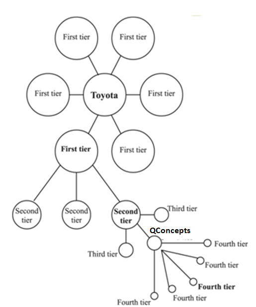

<!DOCTYPE html>
<html>
<head>
	<title>Teamwebsite Niels en Lina</title>

	<meta charset="utf-8">
	<meta name="viewport" content="width=device-width, initial-scale=1">
	<meta http-equiv="X-UA-Compatible" content="IE=edge">
	<link href='https://fonts.googleapis.com/css?family=Open+Sans:300,400,600,700' rel='stylesheet' type='text/css'>
	<link rel="stylesheet" href="../css/bootstrap.min.css">
	<link rel="stylesheet" href="../css/style.css">
	<link rel="shortcut icon" href="../img/favicon.ico" />
</head>
<body>
	<nav class="navbar navbar-inverse navbar-fixed-top">
		<div class="container">
			<div class="navbar-header">
				<button type="button" class="navbar-toggle">
					<span class="icon-bar"></span>
					<span class="icon-bar"></span>
					<span class="icon-bar"></span>                        
				</button>
			</div>   
			<div class="single-page-nav sticky-wrapper" id="tmNavbar">
				<ul class="nav navbar-nav">
					<li><a href="../index.html#homepage" onclick="location.replace('../index.html#homepage')">Homepage</a></li>
					<li><a href="../index.html#over_ons" onclick="location.replace('../index.html#over_ons')">Over Ons</a></li>
					<li><a href="../index.html#smart_onderdelen" onclick="location.replace('../index.html#smart_onderdelen')">Smart Onderdelen</a></li>
					<li><a href="../index.html#voortgang" onclick="location.replace('../index.html#voortgang')">Voortgang</a></li>
					<li><a href="https://drive.google.com/drive/folders/1kE18Yo9kwZhZ4iX8NoHxE8J_GLF_X3x-" class="external" target="_blank">Google Drive</a></li>
				</ul>
			</div>   
		</div>
	</nav>


	
<!-- Start Blog Area -->
		<section id="blog-area">
<div class="container">	
	
	<div id="section4">
					<div class="col-lg-12">
						<a href="../smart_business.html" class="content-link">Terug</a>
						<div class="col-sm-12 text-center inner our-service">
							<h1>Smart Business - Business Model QConcepts</h1>
						</div>
						<div class="tm-box">
							<!---->
							<div class="tm-box-description">
								<p class="tm-box-p">
								<P ALIGN=JUSTIFY STYLE="margin-bottom: 0in">Het goed in kaart brengen
van een bedrijfsmodel (business model) is essentieel voor elke
organisatie, gezien dit verklaart hoe de organisatie inkomsten zal
genereren. Door het goed in kaart brengen hiervan zal het voor de
ondernemer ook makkelijker worden om een investering te werven of om
een samenwerkingsverband aan te gaan. 
</P>
<H2 CLASS="western" ALIGN=JUSTIFY STYLE="margin-left: 0.56in; text-indent: -0.28in; margin-top: 0.14in; margin-bottom: 0in; line-height: 110%; page-break-inside: auto; page-break-after: auto"><A NAME="_ve90i6lnjsw6"></A>
<FONT COLOR="#366091"><FONT SIZE=3><B>Business Model Canvas</B></FONT></FONT></H2>
<P ALIGN=JUSTIFY STYLE="margin-bottom: 0in">Er is bij QConcepts
gekeken hoe het bedrijf in zijn algemeenheid inkomsten genereert. Dit
is gedaan aan de hand van Business Model Canvas. Hierbij wordt er
ingegaan op de elementen die de waardepropositie, infrastructuur,
klanten en de financiën van het bedrijf / product beschrijven.
Hieronder staat het huidige Business Model van QConcepts weergegeven.</P>
<P ALIGN=JUSTIFY STYLE="margin-bottom: 0in"><BR>
</P>
<P ALIGN=JUSTIFY STYLE="margin-bottom: 0in"></P>
<P ALIGN=JUSTIFY STYLE="margin-bottom: 0in"><BR>
</P>
<H2 CLASS="western" ALIGN=JUSTIFY STYLE="margin-left: 0.56in; text-indent: -0.28in; margin-top: 0.14in; margin-bottom: 0in; line-height: 110%; page-break-inside: auto; page-break-after: auto"><A NAME="_b5kqe2ephib2"></A>
<FONT COLOR="#366091"><FONT SIZE=3><B>Gevolgen huidig business model</B></FONT></FONT></H2>
<P ALIGN=JUSTIFY STYLE="margin-bottom: 0in">Het huidige business
model staat QConcepts in staat om het bestaansrecht vast te houden,
echter is het (nog) niet de juiste formule voor groei. De
ingrediënten heeft QConcepts al in huis om het business model uit te
voeren. Er ontbreekt echter het initiatief om een nieuwe markt te
betreden. Zo komt er een steeds grotere behoefte aan verduurzaming,
klimaatadaptatie en circulariteit in de woningbouw. Gebouwen moeten
tegenwoordig, en zeker in de toekomst, duurzamer gebouwd worden.
Composiet materiaal (wat toevallig de specialiteit van QConcepts is)
is hier een ideaal materiaal voor. Zo roesten en rotten composiet
materialen niet en is het volledig brandwerend. Ideaal bouwmateriaal
dus. Het wordt QConcepts aanbevolen om het business model aan te
vullen zodat deze nieuwe markt betreden kan worden. 
</P>
<P ALIGN=JUSTIFY STYLE="margin-bottom: 0in">Zo blijkt uit een
rapportage van de Economist Intelligence Unit dat 90% van
topbestuurders strategische wendbaarheid cruciaal voor het succes van
een bedrijf vindt. Organisaties moeten strategisch wendbaar zijn.
Gebeurt dit niet op tijd, dan kan het bedrijf daaronder lijden. Neem
als voorbeeld Nokia, Free Record Shop, Saab of Kodak. Deze bedrijven
betraden allemaal niet op tijd een nieuwe markt, terwijl de huidige
markt waarin ze optrad steeds instabieler werd.</P>
<P ALIGN=JUSTIFY STYLE="margin-bottom: 0in">De gevolgen voor
QConcepts daarentegen zullen minder extreem zijn. Wel is een
belangrijk gevolg dat het een misgelopen kans op potentiële groei en
winst is.</P>
<P ALIGN=JUSTIFY STYLE="margin-bottom: 0in"><BR>
</P>
<H2 CLASS="western" ALIGN=JUSTIFY STYLE="margin-left: 0.56in; text-indent: -0.28in; margin-top: 0.14in; margin-bottom: 0in; line-height: 110%; page-break-inside: auto; page-break-after: auto"><A NAME="_4a5h1n5zi32t"></A>
<FONT COLOR="#366091"><FONT SIZE=3><B>De keten en netwerken</B></FONT></FONT></H2>
<P ALIGN=JUSTIFY STYLE="margin-bottom: 0in">Overal om je heen zijn er
netwerken. Zo heb je netwerken die mensen verbinden zoals het
internet, zo zijn er netwerken tussen landen (zoals de EU) en zo zijn
er ook netwerken tussen bedrijven. Netwerken beïnvloeden (veelal
onbewust) de mens. Zo kan de mens (onbewust) worden beïnvloed door
personen die zich niet in hun directe omgeving bevinden.</P>
<P ALIGN=JUSTIFY STYLE="margin-bottom: 0in">Er kan onderscheid
gemaakt worden tussen ‘’drie graden van beïnvloedbaarheid’’.
</P>
<OL>
	<LI><P ALIGN=JUSTIFY STYLE="margin-bottom: 0in">Directe
	vriendenkring (first degree)</P>
	<LI><P ALIGN=JUSTIFY STYLE="margin-bottom: 0in">De vrienden van je
	vrienden (second degree)</P>
	<LI><P ALIGN=JUSTIFY STYLE="margin-bottom: 0in">De vrienden van de
	vrienden van je vrienden (third degree)</P>
</OL>
<P ALIGN=JUSTIFY STYLE="margin-bottom: 0in">Dit zie je in bedrijven
ook terug. Zo heb je grote OEM bedrijven (zoals BMW) waarvan
onderdelen worden aangeleverd door partner bedrijven (first degree).
Deze partnerbedrijven worden ook weer beleverd door hun partners
(second degree) etc.</P>
<P ALIGN=JUSTIFY STYLE="margin-bottom: 0in"><BR>
</P>
<P ALIGN=JUSTIFY STYLE="margin-bottom: 0in">Hiervan zijn analyses te
maken, zodat je als bedrijf weet waar je je in de keten bevindt.
Wegens een geheimhoudingsverklaring kan niet specifiek benoemd worden
wie de partners in de keten zijn. Daarom is er voor gekozen om deze
bedrijven anoniem te laten, en ze enkel ‘’First tier, Second
tier, Third tier en Fourth tier’’ te noemen. QConcepts levert
onder andere onderdelen aan voor de auto industrie. Als er naar deze
situatie gekeken wordt (waarbij QConcepts een auto onderdeel
aanlevert), bevindt QConcepts zich in de Third tier. Zo levert
QConcepts een onderdeel aan de Second tier (Commodity-Supplier) welke
verantwoordelijk is voor het maken van de suspensie. Deze Second tier
levert de suspensie vervolgens aan de First tier (SME-Supplier<A CLASS="sdfootnoteanc" NAME="sdfootnote1anc" HREF="#sdfootnote1sym"><SUP>1</SUP></A>)
welke alles assembleert en vervolgens aan de OEM’er levert.</P>
<P ALIGN=JUSTIFY STYLE="margin-bottom: 0in"></P>
<P ALIGN=JUSTIFY STYLE="margin-bottom: 0in"><BR>
</P>
<P ALIGN=JUSTIFY STYLE="margin-bottom: 0in">In een netwerk zit een
grote variëteit aan organisaties. De organisaties kunnen daardoor
verschillende rollen in het netwerk innemen. Er wordt in zijn
algemeenheid een aantal rollen typen aangehouden:</P>
<UL>
	<LI><P ALIGN=JUSTIFY STYLE="margin-bottom: 0in">Macht</P>
	<LI><P ALIGN=JUSTIFY STYLE="margin-bottom: 0in"><B>Financiering</B></P>
	<LI><P ALIGN=JUSTIFY STYLE="margin-bottom: 0in"><B>Merkhouder</B></P>
	<LI><P ALIGN=JUSTIFY STYLE="margin-bottom: 0in"><B>Ketenregie</B></P>
	<LI><P ALIGN=JUSTIFY STYLE="margin-bottom: 0in"><B>Kennis en
	ontwikkeling</B></P>
	<LI><P ALIGN=JUSTIFY STYLE="margin-bottom: 0in"><B>Communicatie</B></P>
	<LI><P ALIGN=JUSTIFY STYLE="margin-bottom: 0in"><B>Productie</B></P>
	<LI><P ALIGN=JUSTIFY STYLE="margin-bottom: 0in">Logistiek</P>
</UL>
<P STYLE="margin-bottom: 0in">QConcepts vult de rol van ‘’Kennis
en ontwikkeling’’ in. En behoort daarbij tot de ‘’Designer’’
rol/identiteit in het ‘’internal netwerk’’ in het model van
Miles &amp; Snow.</P>
<P ALIGN=JUSTIFY STYLE="margin-bottom: 0in">Omdat er sprake is van
strikte geheimhouding kan er geen Pajek analyse gemaakt worden op de
huidige keten en de positie waarin QConcepts zich bevindt. Een Pajek
analyse kan heel simpel, maar ook zeer uitgebreid uitgewerkt worden.
Met een Pajek analyse wordt QConcepts in staat gesteld om een nieuwe
klantenkring te ontdekken en te benaderen.</P>
<P ALIGN=JUSTIFY STYLE="margin-bottom: 0in">                         
  <I><B>Simpel</B></I></P>
<P ALIGN=JUSTIFY STYLE="margin-bottom: 0in"></P>
<P ALIGN=JUSTIFY STYLE="margin-bottom: 0in">                         
  <I><B>Uitgebreid</B></I></P>
<P ALIGN=JUSTIFY STYLE="margin-bottom: 0in"></P>
<DIV ID="sdfootnote1">
	<P STYLE="margin-bottom: 0in; line-height: 100%; page-break-before: always">
	<A CLASS="sdfootnotesym" NAME="sdfootnote1sym" HREF="#sdfootnote1anc">1</A><SUP></SUP><FONT SIZE=2>
	SME-Supplier: Een leverancier welke ‘’Semi-finished’’
	producten aanlevert.</FONT></P>
</DIV>
								</p>
								
								
							</div>                        
						</div>                    
					</div>
				</div>
	</div>
	</section>	

					<!-- Start Footer Area -->
					<footer id="footer-area">
						<div class="container">
							<div class="row text-center">
								<div class="col-sm-12">
									<div class="footer-content">
										<h1></h1>
										<p></p>
										</div>                
									</div>
								</div>
							</div>
							<hr>
							<div class="container">
								<div class="row">
									<div class="col-sm-12 text-center">             
										<p class="copy">Copyright © Lina Seljogi
                                        
                                        | Niels van Vals
									</div>
								</div>
							</div>
						</footer>
						<!-- End Footer Area -->

						<script src="js/jquery-1.11.2.min.js"></script>
						<script src="js/jquery.scrollUp.min.js"></script> <!-- https://github.com/markgoodyear/scrollup -->
						<script src="js/jquery.singlePageNav.min.js"></script> <!-- https://github.com/ChrisWojcik/single-page-nav -->
						<script src="js/parallax.js-1.3.1/parallax.js"></script> <!-- http://pixelcog.github.io/parallax.js/ -->
						<script>
    // HTML document is loaded. DOM is ready.
    $(function() {  
    // Parallax
        $('.intro-section').parallax({
        	imageSrc: 'img/bg-1.jpg',
        	speed: 0.2
        });
        $('.services-section').parallax({
        	imageSrc: 'img/bg-2.jpg',
        	speed: 0.2
    	});
        $('.contact-section').parallax({
        	imageSrc: 'img/bg-3.jpg',
        	speed: 0.2
        });    
        // jQuery Scroll Up / Back To Top Image
        $.scrollUp({
                scrollName: 'scrollUp',      // Element ID
		        scrollDistance: 300,         // Distance from top/bottom before showing element (px)
		        scrollFrom: 'top',           // 'top' or 'bottom'
		        scrollSpeed: 1000,            // Speed back to top (ms)
		        easingType: 'linear',        // Scroll to top easing (see http://easings.net/)
		        animation: 'fade',           // Fade, slide, none
		        animationSpeed: 300,         // Animation speed (ms)		        
		        scrollText: '', // Text for element, can contain HTML		        
		        scrollImg: true            // Set true to use image		        
            });
        // ScrollUp Placement
        $( window ).on( 'scroll', function() {
            // If the height of the document less the height of the document is the same as the
            // distance the window has scrolled from the top...
            if ( $( document ).height() - $( window ).height() === $( window ).scrollTop() ) {
                // Adjust the scrollUp image so that it's a few pixels above the footer
                $('#scrollUp').css( 'bottom', '80px' );
            } else {      
                // Otherwise, leave set it to its default value.
                $('#scrollUp').css( 'bottom', '30px' );        
            }
        });
        $('.single-page-nav').singlePageNav({
        	offset: $('.single-page-nav').outerHeight(),
        	speed: 1500,
        	filter: ':not(.external)',
        	updateHash: true
        });
        $('.navbar-toggle').click(function(){
        	$('.single-page-nav').toggleClass('show');
        });
        $('.single-page-nav a').click(function(){
        	$('.single-page-nav').removeClass('show');
        });
        
    });
</script>
</body>
</html>
